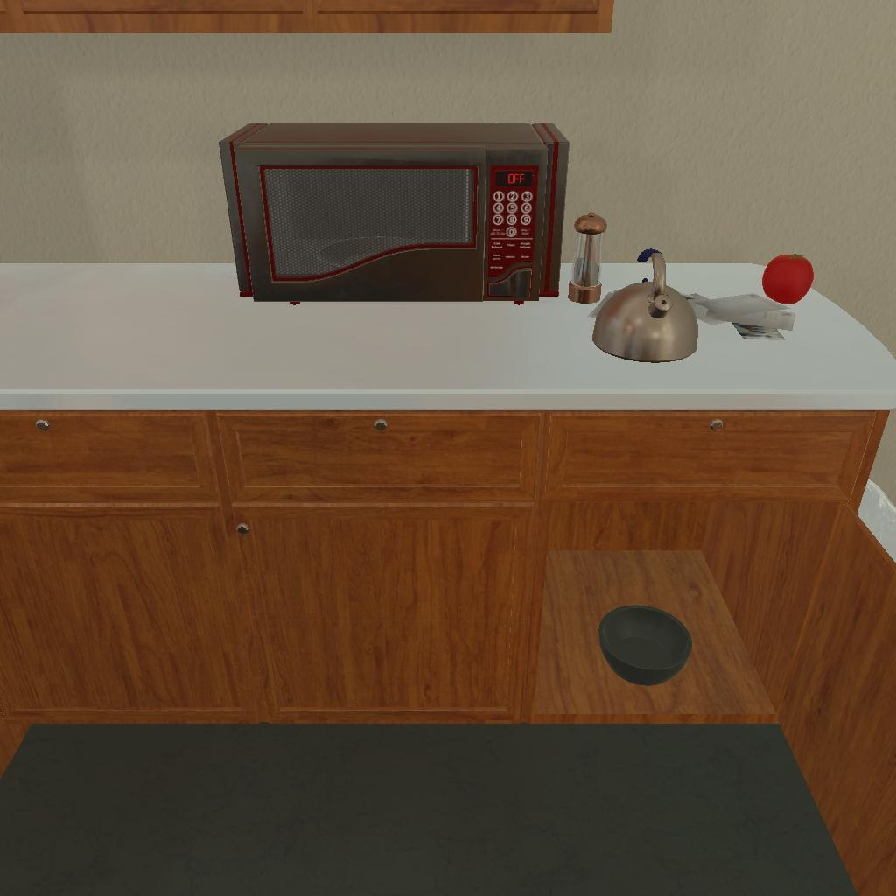

---------------------------------------------------------task: 24---------------------------------------------------------
--------------------------------------------------------------------------------------------------------------------------------------------------------------------
--------------------------------------------------------------------------------------------------------------------------------------------------------------------
Step:--------------------------------------------------------------------------6-------------------------------------------------------------------------------
----------------------------------------
VLM Prompt:
**Task**
Please perform as an embodied AI agent. Our final objective is to put a hot tomato in fridge. Below is the plan for completing the task, the current observation, alongside historical data and admissible actions for the next step. Please determine the best action for the next step!
**Plan**
Below is a detailed step-by-step plan to complete the task.
1. Find a tomato.
2. Pick up the tomato.
3. Find a microwave.
4. Heat the tomato with the microwave.
5. Find a fridge.
6. Open the fridge.
7. Place the hot tomato inside the fridge.
8. Close the fridge.
**Current Observation**
Displayed is an image capturing the current position of the agent.
Objects in The Image: ['microwave', 'kettle', 'apple', 'teaspoon', 'kitchen cabinet', 'trash bin hole']
**History Information**
Displayed are the previous observations with their corresponding actions.
State 0:
No history.
State 1:
1. Step Index in the Plan: 1
2. Objects: Kitchen Sink, Faucet, Neti Pot
3. Action: go to countertop 1
State 2:
1. Step Index in the Plan: 1
2. Objects: Countertop, Coffee Maker, Copper Pots, Lettuce
3. Action: go to cabinet 1
State 3:
1. Step Index in the Plan: 1
2. Objects: Wooden Floor
3. Action: go to cabinet 2
State 4:
1. Step Index in the Plan: 1
2. Objects: Wooden Door
3. Action: go to cabinet 3
State 5:
1. Step Index in the Plan: 1
2. Objects: Wooden Surface
3. Action: go to cabinet 4
State 6:
1. Step Index in the Plan: Unknown
2. Objects: Cabinets, Countertops, Apple (misidentified object)
3. Action: open cabinet 4
**Admissible Actions**
(1): go to cabinet 1
(2): go to cabinet 2
(3): go to countertop 1
(4): go to cabinet 5
(5): go to microwave 1
(6): go to cabinet 6
(7): go to drawer 1
(8): go to drawer 2
(9): go to drawer 3
(10): go to cabinet 7
(11): go to cabinet 8
(12): go to sink 1
(13): go to sinkbasin 1
(14): go to coffeemachine 1
(15): go to cabinet 9
(16): go to cabinet 10
(17): go to drawer 4
(18): go to cabinet 11
(19): go to stoveburner 1
(20): go to stoveburner 2
(21): go to stoveburner 3
(22): go to stoveburner 4
(23): go to cabinet 12
(24): go to toaster 1
(25): go to drawer 5
(26): go to countertop 2
(27): go to fridge 1
(28): go to cabinet 13
(29): go to cabinet 14
(30): go to diningtable 1
(31): go to garbagecan 1
(32): go to safe 1
(33): close cabinet 4
(34): take kettle 1 from cabinet 4
(35): take bowl 1 from cabinet 4
(36): take peppershaker 1 from cabinet 4
(37): take tomato 1 from cabinet 4
**Analysis Guideline**
1. Analyze the history and current observation, and then determine our current step in the plan and our current place.
2. List all visible objects related to the task in the current observation, without summarizing any as "various items."
3. Analyze the objects in the current observation based on the history and the requirements for the current step, and then determine if we can complete the step with the current observation.
4. Analyze and decide on the most appropriate action to take.
5. Summarize the analysis using the following format: "Analysis: [The summarization of the analysis], The Most Appropriate Action: (i which is the integer.): [Selected action]"
**Notes**
1. We must complete each step of the plan in order and cannot skip steps when the previous ones are not finished.
2. For "Go to" actions listed as "go to xxx [n]", interpret this as there are n distinct actions available: "go to xxx 1", "go to xxx 2", ..., "go to xxx n". Select one specific action from these options instead of using "go to xxx [n]".
3. If receptacles such as drawers, cabinets, and so forth are closed in the current observation, we may try to open them.
4. Pay attention to synonyms and ensure clarity in the terms used.
5. We must determine and provide the single action which must be in the **Admissible Actions**.
6. If there is no history available, we are at the first step and the current place is "Unknown".
**Answer**
Please select the most suitable action by following the **Analysis Guideline**, keeping the above **Notes** in mind.
----------------------------------------
----------------------------------------
VLM Response:
Analysis: The current step in the plan is to find a tomato, which is step 1. The current place seems to be a kitchen with a countertop visible, near a microwave. In the current observation, the listed objects are a microwave, kettle, apple, teaspoon, kitchen cabinet, and trash bin hole. None of these objects is a tomato, but it is mentioned in the history data that a tomato was found in cabinet 4, and the cabinet was opened in the last action. Therefore, we can conclude that we have located the tomato and need to pick it up. The most appropriate action to complete this step is to take the tomato from cabinet 4.
The Most Appropriate Action: (37): take tomato 1 from cabinet 4
----------------------------------------
----------------------------------------
>>> Refine VLM Response and Get Pure Action: take tomato 1 from cabinet 4
----------------------------------------
-----------------------------------------------------------------
Running time: 8.140279531478882 seconds
Total Money: 0
-----------------------------------------------------------------
-----------------------------------------------------------------
Summarization Prompt:
**Context**
Analysis: Since there is no history information, we are at the first step in the plan, which is to find a statue. The current place is unknown. In the current observation, we see a floorlamp next to an armchair with a small table that has a small object on it, which could potentially be the statue we are looking for. Since the plan requires us to find a statue first and it appears there might be one on the table next to the armchair, we should investigate this object to determine if it is the statue we need.
The Most Appropriate Action: (1): go to armchair 1
**Summary**
1. Step Index in the Plan: 1
2. Objects: Floorlamp, Armchair, Small Table, Small Object (potential statue)
3. Action: go to armchair 1
**Context**
Analysis: The current step in the plan is to find a tomato, which is step 1. The current place seems to be a kitchen with a countertop visible, near a microwave. In the current observation, the listed objects are a microwave, kettle, apple, teaspoon, kitchen cabinet, and trash bin hole. None of these objects is a tomato, but it is mentioned in the history data that a tomato was found in cabinet 4, and the cabinet was opened in the last action. Therefore, we can conclude that we have located the tomato and need to pick it up. The most appropriate action to complete this step is to take the tomato from cabinet 4.
The Most Appropriate Action: (37): take tomato 1 from cabinet 4
Please summarize the context by following above examples when providing the summary, and ensure that only the summary is included, without any extra explanation.
**Summary**
-----------------------------------------------------------------
-----------------------------------------------------------------
Summarization Response:
1. Step Index in the Plan: 1
2. Objects: Microwave, Kettle, Apple, Teaspoon, Kitchen Cabinet, Trash Bin Hole
3. Action: take tomato 1 from cabinet 4
-----------------------------------------------------------------
-----------------------------------------------------------------
Text Observation:You pick up the tomato 1 from the cabinet 4.
-----------------------------------------------------------------
UNSUCCEED